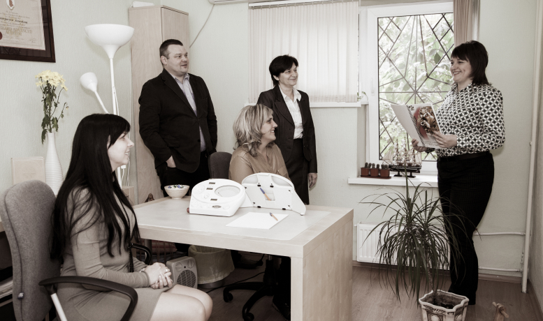

О Нас
В 2009 году Маргарита Сотникова - соосновательница Образовательного Холдинг Логос, обучившись в Европе, предоставила индивидуальную консультацию по личностному росту (одитинг) Людмиле Богуш - создательнице Студии Времени Богуштайм. Это было настолько успешным и так изменило жизнь Людмилы, что она предложила Маргарите сотрудничество, которое в результате переросло в появление группы «Планета». Группа объединила профессионалов в области душевного здоровья и личностных консультаций, практикующих одитинг - способ восстановления жизненного потенциала человека посредством избавления человека от накопленной в разуме боли потерь, неудач, потерь болезней и недостигнутых целей.
К 2013 году к Планете присоединились несколько специалистов, однако объём предоставления группы был невелик, и ограничивался в основном Украиной.
В 2014 году к группе присоединился Евгений Сотников - муж Маргариты, совладелец Логоса, бизнес консультант, кризис-менеджер. Внедрив в Планете основные инструменты управления, Евгений положил начало резкому росту «Планеты», что привлекло внимание американской кинокомпании, которая в 2015 сняла о группе и ее успешных действиях сюжетный фильм, показанный для примера в других подобных организациях по всему миру.
Успешные действия и стандартный административный подход привели к расширению сферы деятельности группы, в «Планету» на услуги стали приезжать клиенты из 23 стран мира, включая страны Евросоюза и США. Это было обусловлено теми результатами, которые они получали, поскольку, восстановив свой жизненный потенциал, клиенты «Планеты» - в основном владельцы бизнеса, получали безусловный рост и расширение своих компаний.

Это привело к тому, что в 2019 году группа стала лучшей в Европе, а 10 ее специалистов возглавили турнирную таблицу в личном зачёте. Кроме того, группа открыла филиалы в СНГ, а затем в 2022, и в США.
На сегодняшний день наша группа продолжает расти, расширяя своё предоставление на территории не только Украины, но и на территории СНГ и в европейских странах. Число одиторов группы выросло до 25, а число всего персонала до 60.